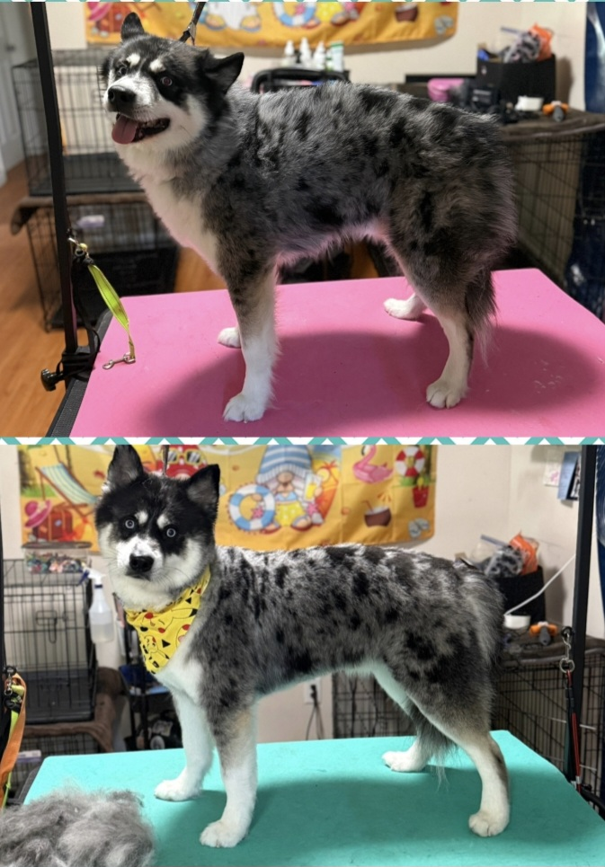

Caring Approach
Comfort and patience come first for every furry guest.
Safe, caring and personalized grooming with plenty of patience, premium products and a whole lot of love.
Celebrate with us and treat your pup to a fresh groom. Offer available now through October 31, 2026.
Comfort and patience come first for every furry guest.
Each groom is tailored to your dog's coat, style and needs.
Our goal is a clean, comfortable pup who leaves feeling brand new.
Use the arrows or dots to browse a few Furever Fluffy transformations.

A fresh groom for this black-and-white beauty.
Furever Fluffy is dedicated to creating a safe, caring and stress-conscious grooming experience. We use quality pet-safe products and professional grooming equipment while giving each dog the individual attention they deserve.
Meet the Furever Fluffy team →Regular brushing between appointments helps prevent tangles and keeps coats comfortable.
Explore our grooming options and find the right service for your furry friend.